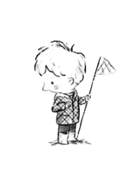

Vue
컴포넌트 기반 프레임워크
협업을 위해 기본 문법, 파일구성부터
라우팅, API 연결까지 공부하였습니다.
songmh123456@gmail.com

안녕하세요.
웹 프론트엔드를 꿈꾸는 송민호입니다.
방문해주셔서 감사합니다.
웹 프론트엔드를 꿈꾸는 송민호입니다.
방문해주셔서 감사합니다.

반응형 웹사이트 제작에 관심이 있습니다.
여러 기기와 브라우저에 알맞게 호환되는 웹사이트를 제작할 수 있습니다.
HTML, CSS, JQUERY를 활용하여 최신 트렌드에 맞는 레이아웃을 제작할 수 있습니다.